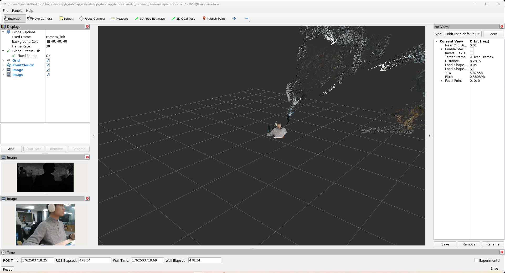

What It Does
项目做的是什么
- 整理 RGB-D、LiDAR、IMU、TF、Madgwick 滤波和 RTAB-Map 工作空间的启动路径。
- 用 RViz/rtabmap_viz 验证彩色点云、深度对齐、话题映射和建图效果。
- 连接 HandLiDAR 的地图采集与 AMR 的导航执行，是场景表示的重要中间层。
VLN Relation
和当前 VLN 主线的关系
Craft Record
工程痕迹
这个项目保留了从硬件选型、结构验证、驱动调试、话题链路到现场反馈的连续记录。页面里放的不是单独的效果截图，而是一段可回溯的迭代线索。
Media
关键画面


README Snapshot
README / 项目说明片段
LTME-02A + Gemini 335 + RTAB-Map 融合建图项目
本项目用于在 ROS 2 Humble 环境下，把 力策 LTME-02A 2D 激光雷达 和 Orbbec Gemini 335 RGB-D 深度相机 接入 RTAB-Map，实现雷达、深度相机、里程计、地图和 RViz 的一键启动。
当前默认方案已经不是单独看雷达，也不是只跑深度相机，而是完整融合：
Gemini335 RGB + Depth + CameraInfo -> rgbd_sync ------> /rgbd_image
/rgbd_image -> rtabmap_odom/rgbd_odometry ------------> /odom
LTME-02A /scan ---------------------------------------> rtabmap
/rgbd_image + /scan + /odom --------------------------> rtabmap -> /map + /mapData + /cloud_map也就是说，RTAB-Map 同时拿到了：
- LTME-02A 雷达扫描
/scan - Gemini335 RGB-D 同步数据
/rgbd_image - 默认由 RGB-D 里程计计算出来的
/odom；需要雷达 ICP 里程计时可用USE_ICP_ODOM=true切换
重要：当前链路已经融合运行，但要得到几何上准确的地图，还需要继续精调base_link -> laser和base_link -> camera_link外参。
---
运行截图
以下截图由当前项目实际启动后在 RViz 中抓取，截图文件位于 docs/images/。
RTAB-Map 融合建图视图
该视图由 ./scripts/start_gemini335_rtabmap.sh 启动，包含 LTME-02A 雷达扫描、Gemini335 彩色/深度图像、RTAB-Map 点云地图和 2D 栅格地图。
雷达与深度相机外参校准视图
该视图由 ./scripts/start_fusion_calibration.sh 启动，重点显示 LTME-02A /scan 与 Gemini335 /camera/depth_registered/points，用于观察雷达扫描线和深度点云是否在同一空间位置上对齐。
2026-06-23 本轮彩色 RTAB-Map 截图
这张图是本轮重新启动当前项目后抓取的 RViz 彩色截图，使用 rviz/color_rtabmap_screenshot.rviz 显示 /map、/cloud_map、/mapData 和 TF。注意：当前现场 RGB 画面本身偏灰白，所以点云虽然按 RGB8 彩色显示，视觉上仍然比较浅；这不是单色占据栅格，而是实际 RGB 点云颜色较淡。
2026-06-23 当前 TF 树
这张图根据本轮运行中的 ros2 run tf2_tools view_frames 输出整理，当前主链路为 map -> odom -> base_link，雷达和 Gemini335 都挂在 base_link 下。
当前 TF 拓扑：
map
└── odom # 动态 TF，约 20 Hz
└── base_link # 动态 TF，约 12 Hz
├── laser # 静态 TF，LTME-02A
└── camera_link # 静态 TF，Gemini335 安装外参
└── camera_depth_frame
├── camera_color_frame
│ └── camera_color_optical_frame
└── camera_depth_optical_frame本轮实测 view_frames 日志：docs/logs/codex_tf_tree_current.log。
2026-06-23 本轮操作记录
本轮重新检查并确认的 RTAB-Map 建图链路：
/scan LTME-02A 雷达扫描输入
/rgbd_image Gemini335 RGB + Depth 同步输入
/odom RGB-D odometry 默认输出；可切换 LiDAR ICP
/map RTAB-Map 2D OccupancyGrid
/mapData RTAB-Map 图优化与 MapCloud 数据
/cloud_map RTAB-Map 彩色点云地图
/tf, /tf_static 当前坐标树本轮保留的关键配置：
| 项目 | 当前值 | 说明 |
|------|--------|------|
| `USE_SCAN` | `true` | RTAB-Map 订阅 `/scan`，雷达参与栅格/障碍物融合 |
| `GRID_SENSOR` / `Grid/Sensor` | `2` | 当前效果最好；尝试 `1` 后 `/cloud_map` 点数明显变少，已恢复为 `2` |
| `Grid/3D` | `true` | 开启 3D 栅格/点云建图 |
| `Grid/FromDepth` | `true` | 使用 RGB-D 深度生成地图 |
| `Grid/RangeMax` | `8.0` | 限制深度/栅格有效距离 |
| `camera_x/y/z` | `0.08 / 0.00 / 0.18` | `base_link -> camera_link` 当前外参 |
| `camera_roll/pitch/yaw` | `0 / 0 / 0` | 当前相机姿态外参 |
| `laser_x/y/z` | `0.00 / 0.00 / 0.10` | `base_link -> laser` 当前外参 |
完整 README 已保存在本站快照中，可从本页底部打开。